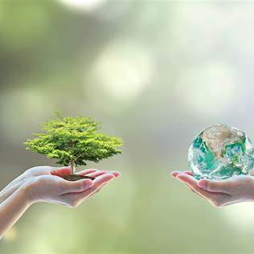

Що таке екологія?
Екологія – це наука, що вивчає взаємодію живих організмів між собою та їхнє середовище існування. Вона досліджує структури екосистем, вплив людини на природу та методи збереження біорізноманіття.
Чому екологія важлива?
Природні ресурси не є безмежними, а екосистеми можуть бути легко зруйновані через діяльність людини. Вивчення екології дозволяє нам:
- Зрозуміти вплив людської діяльності на довкілля.
- Розробити ефективні стратегії збереження природи.
- Зменшити рівень забруднення повітря, води та ґрунтів.
- Забезпечити стале використання природних ресурсів.
Основні екологічні проблеми
На сьогодні існує багато екологічних загроз, які впливають на якість життя на планеті.
1. Глобальне потепління
Викиди парникових газів спричиняють підвищення температури на Землі, що призводить до танення льодовиків, підвищення рівня світового океану та зміни клімату.
2. Забруднення води
Викиди промислових відходів, пластик у океанах та нестача чистої води є критичними проблемами. Забруднена вода загрожує життю мільйонів людей та тварин.
3. Вирубка лісів
Ліси виробляють кисень та підтримують баланс клімату. Масове вирубування призводить до зменшення біорізноманіття та збільшення викидів CO₂.
4. Вимирання видів
Через втрату середовища існування, забруднення та зміну клімату тисячі видів знаходяться на межі вимирання.
5. Пластикове забруднення
Щорічно у світовий океан потрапляють мільйони тонн пластику, що шкодить морським екосистемам та забруднює довкілля.
Як кожен може допомогти природі?
Кожна людина може зробити свій внесок у захист навколишнього середовища. Ось кілька порад:
- Сортуйте відходи та здавайте вторинну сировину.
- Зменшуйте використання пластику (екосумки, металеві пляшки).
- Економте воду та електроенергію.
- Висаджуйте дерева та доглядайте за зеленими зонами.
- Використовуйте громадський транспорт або велосипеди.
- Підтримуйте екологічні ініціативи та організації.